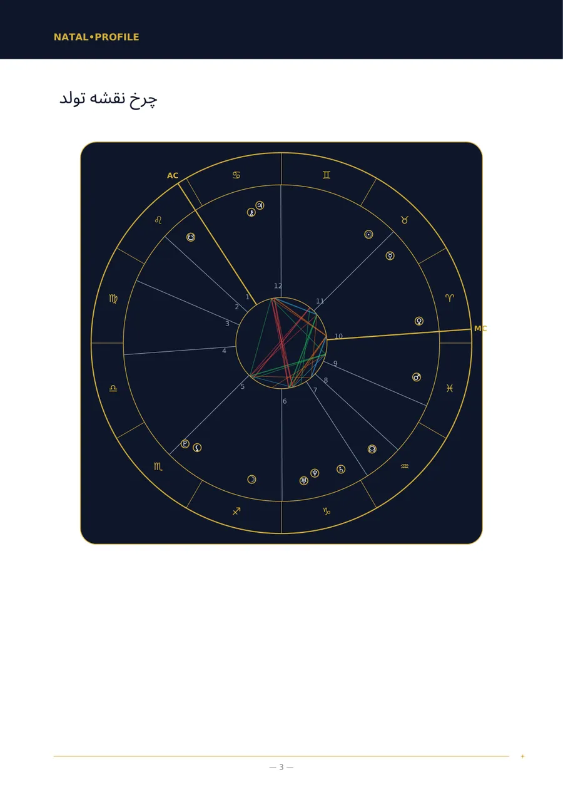
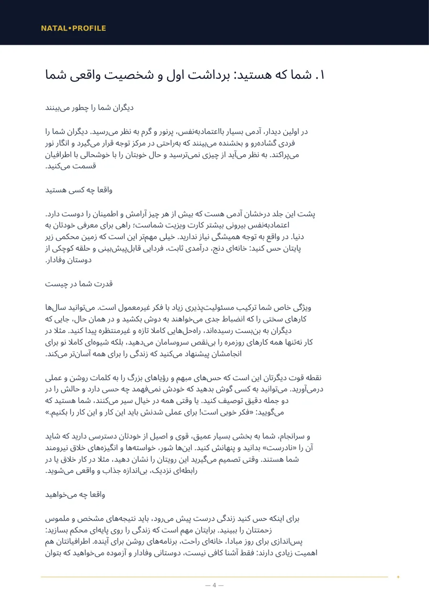
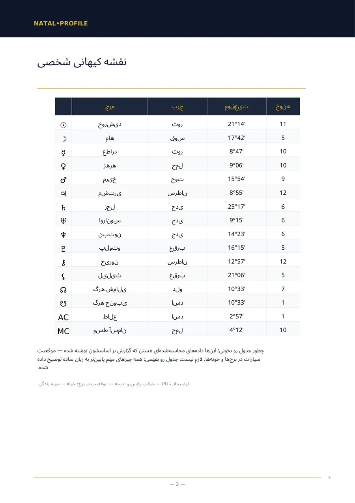
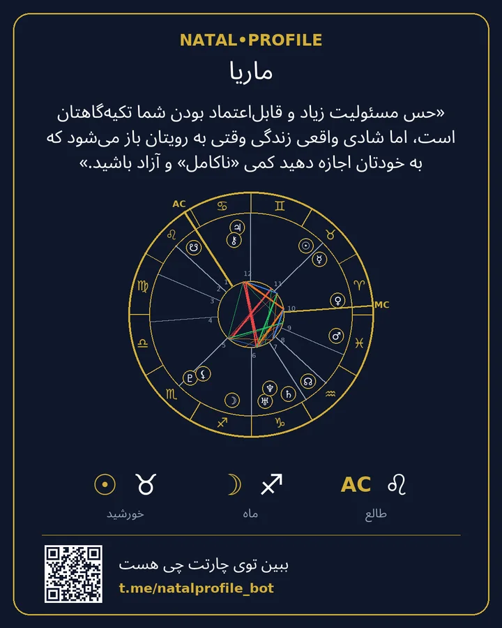

💼 تحلیل مسیر شغلی و مالی
در کار در چه چیزی قوی هستید، چه مشاغلی به شما میآید و رابطهتان با پول چگونه است.
- 200 ⭐ ستارهٔ تلگرام
- 7 فصل
چه چیزهایی دارد
- نقاط قوت شما در کار
- حرفهها و مشاغلی که برای شما مناسب هستند
- کجا و با چه کسانی باید کار کنید
- پول: چگونه درآمد کسب میکنید و خرج میکنید
- چه چیزی به رشد شما کمک میکند و چه چیزی مانع آن میشود
- چگونه کارهای جدید را شروع کنید و شغل خود را تغییر دهید
- از کجا شروع کنید: سه قدم
مناسب چه کسانی است
- در حال انتخاب شغل هستید یا به تغییر کار فکر میکنید.
- میخواهید بدانید در چه شرایطی بهتر کار میکنید.
- کنجکاوید بدانید چطور درآمد دارید و خرج میکنید.
چه چیزهایی وارد میکنید
نام، جنسیت، تاریخ، ساعت و شهر تولد.
صفحههای نمونه
صفحههای واقعی گزارش «چارت تولد». این یک نمونه است: اطلاعات تولد ساختگی است.




گزارشهای دیگر
نقشه تولد شخصی (تحلیل کامل)
تحلیل کامل شخصیت شما از روی تاریخ، ساعت و محل تولد.
250 ⭐9 فصل · جزئیات →
نقشه تولد شخصی (تحلیل پایه)
تحلیل شخصیت وقتی ساعت تولد معلوم نیست.
150 ⭐6 فصل · جزئیات →
تحلیل تطابق (کامل)
دو نفر: چه چیزی شما را جذب هم کرد، کجا اختلاف دارید و به هم چه میدهید.
250 ⭐6 فصل · جزئیات →
تحلیل تطابق (پایه)
سازگاری شخصیتها وقتی ساعت تولد معلوم نیست.
150 ⭐5 فصل · جزئیات →